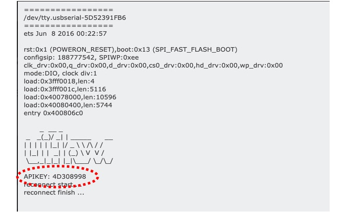

2020年6月のATOM Echoの発売でMatrix、Lite、Echoの3タイプに増えた超小型の開発モジュール「ATOMシリーズ」のプログラミング環境（UI Flow/BlocklyとArduino IDE）についてまとめます。
ATOMシリーズは原稿執筆時点でMatrix、Lite、Echoの3タイプがあります。縦横の大きさは3タイプ共通で24mm x 24mm、高さはMatrix: 14mm、Lite: 10mm、Echo: 17mmです。それぞれのスペックは次のようになっています。
3タイプともMPUはESP32-PICO-D4を搭載していて、Wi−Fi、Bluetoothで通信できます。Matrixには5 x 5 のRGBマトリックスLEDと6軸加速度・ジャイロセンサが搭載され、Liteは1個のRGB LEDが、Echoには1個のRGB LEDとスピーカー、マイクが搭載されているのがそれぞれの特徴です。
ATOMシリーズも他のM5Stack、M5StickC製品と同様に、UI FlowのBlocklyとMicroPython、Arduino IDEでプログラムが作れます。
UI FlowはM5Stack用のプログラミング環境です。ブロックプログラミングのBlocklyとMicroPythonでプログラミングできます。
UI Flowを使うには、まずM5BurnerというツールでファームウェアをATOMに書き込みます。M5StackのWebサイトのソフトウェアダウンロードページにいき、お使いのパソコン用の「M5Burner」をダウンロードしてインストールします。
M5Burnerを立ち上げて、左側のメニューのATOMをクリックすると、ダウンロード可能なファームウェアとしてUIFlowとEchoSTTが表示されます。UIFlowがUI Flow用、EchoSTTがATOM Echoの音声認識（Speech to Text）用のファームウェアです。
UI Flowはパネル右上のプルダウンメニューにダウンロード可能なバージョンが表示され、原稿執筆時点の最新版はMatrix用、Lite用ともにv1.6.1です。公式にはUI FlowではATOM Echoはサポートされておらず、Echo用は表示されません。
ATOM MatrixやLiteをUSBケーブルでパソコンに接続し、M5Burner左上の「COM」欄でATOMを接続したUSBのCOM番号（MacOSならデバイス名）を選びます。M5BurnerでSSIDとパスワードを設定できるので、ATOMをWi-Fiに接続するなら、それぞれの欄に値を設定します。上の図のようにUIFlowのパネルの右下が「Download」になっていたら、クリックしてファームウェアをクラウドからパソコンにダウンロードします。ダウンロードが完成すると、ボタンが「Remove」と「Burn」に変わるので、「Burn」をクリックしてファームウェアをATOMに書き込みます。
UI FlowでプログラミングするにはデバイスのApi Keyが必要になります。M5StackやM5StickCにはLCDがあり、ファームウェアを書き込むとLCDにApi Keyが表示されます。ATOMシリーズにはLCDがないので、M5Burnerで「COM Monitor」をクリックして、ATOMをリセットすると、次の図のようにApi Keyが表示されます。

ブラウザでUI Flowにアクセスし、右上のSettingメニューからApi Keyを入力し、DeviceとしてAtom-MatrixかAtom-Liteを選択します。ここでもATOM Echoは表示されません。
Settingを終えると、左側のUI画面にはATOMが表示され、「ハードウェア」メニューにはRGBカラーと加速度＆ジャイロが現れます。RGBカラーを見ると、5 x 5 のマトリックスLEDを制御するためのブロックが表示されます。
あとは好きなブロックを選んで組み合わせることで、ATOMを動かすことができます。例えば次のプログラムはATOM MatrixのボタンをクリックするごとにLEDの色が赤→緑→青と変化するプログラムです。
ATOM Echoの音声認識ファームウェアEchoSTTの使い方は「M5Stackマンスリーアップデート 2020年6月【号外】」の「ATOM Echoで音声認識してみるをご覧ください。
次は、Arduinoでプログラミングする方法を見てみましょう。
まず、Arduino IDEを立ち上げて、「ツール」メニューから「ライブラリを管理…」を選んで、ライブラリマネージャを立ち上げます。検索窓に「atom」と入力して、「M5Atom」ライブラリをインストールします。原稿執筆時点での最新版は0.0.1です。

また、「M5Atom」ライブラリについてくるサンプルプログラムが、「FastLED」というライブラリを使っているので、これもライブラリマネージャでインストールしておきます。
「M5Atom」ライブラリをインストールすると、「ファイル」メニューの「スケッチ例」に「M5Atom」が追加されます。その中の「Buttom」と書かれたスケッチを選んでみます（Buttonのスペルミスだと思います）。
ビルドするには、最初にボードを選択しますが、原稿執筆時点では「M5ATOM」はありません。代わりに「M5StickC」を選びます。シリアルポートを選択して、ビルドボタンをクリックすると、サンプルプログラムが動き出します。ATOMのマトリックスLEDがスイッチになっていて、これを押すと、押すたびにLEDの色が赤、緑、青と変化します。
Arduinoのスケッチの書き方はM5StackやM5StickCとほぼ同じです。スケッチの先頭にM5Stackでは #include <M5Stack.h> 、M5StickCでは #include <M5StickC.h> と書きますが、ATOMでは #include <M5Atom.h> と書きます。
スケッチ例には「Button」の他に「LEDDisplay」「LEDSet」「MPU6886」があります。
「LEDSet」はマトリックスの左上のLEDだけの色を変えるサンプル、「MPU6886」は加速度とジャイロセンサの値をシリアルに出力するサンプル、「LEDDisplay」はマトリックスLEDに「ATOM」という文字をスクロールさせながら表示するサンプルです。
原稿執筆時点でM5ATOMライブラリにはバグがあり、そのままでは「LEDDisplay」は動きません。ArduinoのライブラリはArduino IDEの「環境設定」の「スケッチブックの保存場所」で指定しているフォルダの libraries にあり、バグのあった LED_DisPlay.cpp は以下の場所にあります。
/スケッチブックの保存場所/libraries/M5Atom/src/utility/LED_DisPlay.cpp
このファイルの103行目を次のように修正すると、バグが修正できます。
修正前
xSemaphoreTake(_xSemaphore, portMAX_DELAY);
修正後
xSemaphoreTake(_xSemaphore, 100);
プログラムを作るためのツールではないのですが、M5Stackの各製品には EasyLoader というツールが提供されています。これは各製品のサンプルプログラムを書き込むツールで、簡単に動作確認ができます。
ATOM用の EasyLoader はそれぞれの製品ページからダウンロードできます。
| 対象製品 | OS | 機能 |
|---|---|---|
| Matarix用 | Windows | ATOMという文字がスクロール表示される |
| Lite用 | Windows | ボタンをクリックするたびにLEDの色が変わる |
| Echo用 | Windows/MacOS | ATOM Echoをブルートゥーススピーカーにする |
Matrix用のEasyLoaderをダウンロードして、起動すると、次のような画面が表示されます。
MatrixをUSBケーブルでパソコンにつなぎ、USBポートのCOM番号を選択して「Burn」ボタンをクリックすると、サンプルプログラムがMatrixに書き込まれます。書き込みが終了すると「Ready」が「Successfully」に変わり、プログラムが動き始めます。
単機能ですが、製品の動作確認がしたい時などに使えるツールです。